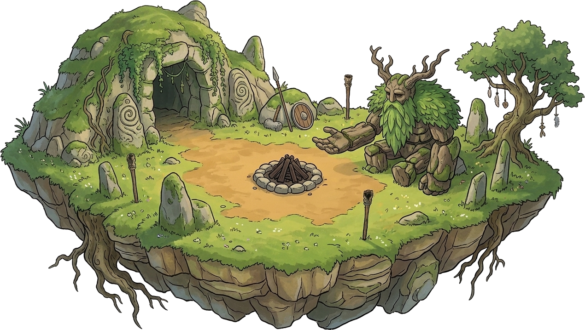

Mapa do Mundo
Terras de Tribos Ancestrais


Terras de Tribos Ancestrais
Andrei Barbuto
Ajude a história a virar mangá
Inicialmente, Tribos Ancestrais seria apenas um livro escrito. Mas ao dar vida visual às cenas, a história pediu para virar um mangá — e hoje estudo desenho para transformar toda essa obra em quadrinhos.
contatoandreibr@gmail.com
Titular: Andrei Barbuto Romanelli Lopes